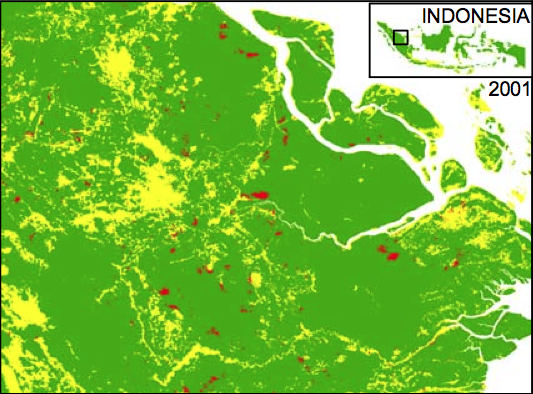
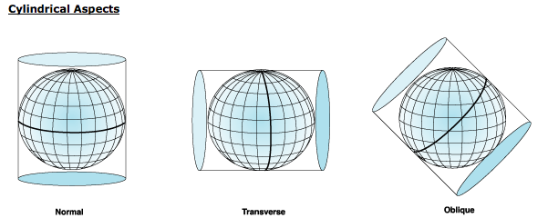

Causal Inference with Spatial Data
(ArcGIS 10 for Economics Research)
Lecture 1
Introduction
Masayuki Kudamatsu
27 August, 2018
Press SPACE to proceed.
To go back to the previous slide, press SHIFT+SPACE.
Today's road map
1. Why GIS for economics?
2. Satellite images and scanned old maps
3. GIS software
4. Polygon, polyline, point, and raster
5. Coordinate systems
1. Why GIS for economics?
Reason #1
More feasible research questions
Satellite images & old maps (this lecture)
Merge datasets by proximity (Lecture 2)
e.g., weather data with survey data
Estimate the spillover effect on the control group (Lecture 3)
Reason #2
More credible identification strategy
Control for more covariates / fixed effects (Lectures 3, 5)
Instruments (Lectures 4, 6)
RD-design (Lectures 7)
2. Satellite images & old maps
Satellite image example #1
Deforestation in Indonesia
# of districts in a province $\uparrow$
$\Rightarrow$ Each district govt official engages in Cournot competition in selling (illegal) logging permits
$\Rightarrow$ Deforestation in the province $\uparrow$
Cannot rely on official stats of logging
$\Rightarrow$ Use satellite images
- Spatial resolution: 250m x 250m pixel
- Data: electromagnetic radiation strength in 36 bands of spectrum
- Develop algorithm to convert radiation patterns to forest coverage
Pixel-level data on deforestation
|  |

|
(Figure I of Burgess et al. 2012)
District-level data on deforestation

|

|
(Figure II of Burgess et al. 2012)
Satellite image example #2
Nighttime light 1992
(Source: Version 4 DMSP-OLS Nighttime Lights Time Series)

Satellite image example #2
Nighttime light 2013
(Source: Version 4 DMSP-OLS Nighttime Lights Time Series)

Nighttime light in top 5 econ journals
Henderson et al (2012): correlate with real GDP growth
Pinkovskiy & Sala-i-Martin (2016): accuracy of GDP versus household surveys
Michalopoulos & Papaioannou (2013, 2014), Alesina et al (2016): measure ethnicity-level development in Africa
Hodler & Raschky (2014): Presidents' home region brighter
Storeygard (2016): Impact of trade infrastructure in Africa
Henderson et al (2018): Geographic correlates of light
Campante and Yanagizawa-Drott (2018): Impact of air links
For more satellite image examples, see a survey by Donaldson and Storeygard (2016).
Old map example #1
Road building in Kenya
Digitize Michelin maps for Kenya since 1961
Track road network expansion over time
- We will learn line length calculation in Lectures 6 and 7
See if the president's ethnic group gets more roads built than other groups
Digitizing old maps

(source: Remi Jedwab's presentation slide)
Old map example #2
Ethnic homelands in Africa
Drawn by Murdock (1959)
Digitized by Nunn (2008), to match ethnicity-level data on slave trade with country-level data (Lecture 4)
Also used by Alsan (2015) (Lecture 2)
Other examples: Nunn & Wantchekon (2011), Michalopoulos & Papaioannou (2013, 2014, 2016), Alesina et al. (2016)
Ethnic homeland & country boudaries

Figure II of Nunn (2008)
Practical advice
Satellite images: some are freely available but very costly (time & money) to process
- See "15 Free Satellite Imagery Data Sources" by GIS Geography
- An example of constructing data from satellite images: Measuering Yields from Space
Practical advice (cont.)
Old maps: digitizing is also time-consuming but feasible with patience
- Georeferencing: Yale Map Collection (2009) (pp. 8-10) and ArcGIS Help: Georeferencing a raster dataset
- Create vector data: ArcGIS 10: Editing & Creating Your Own Shapefiles (Parts 3-4)
$\Rightarrow$ This course helps you use these datasets
3. GIS software
ArcGIS
- Python-friendly
- Buggy; tricky to create map images; Windows only
QGIS
- Free; easy to create map images; compatible with any OS
- Python-unfriendly
- Tutorials:
- www.qgistutorials.com for interactive use
- Lawhead (2017) for Python coding
$\Rightarrow$ For the ease of use of Python (for replication), we will learn ArcGIS
R
- Can be integrated into statistical analysis
- Tedious to browse data
- Textbook: Brunsdon & Comber (2015)
- Tutorial by Nick Eubank
- A Python library to work on spatial data
- Still under development (as of July 2018)
Purchasing ArcGIS
License fee (in case of Japan): 18,000 yen per year
- Price plan differs across countries.
- Contact ESRI of your country.
Make sure the package you buy include:
- ArcGIS Desktop Advanced
-
ArcGIS Spatial Analyst extension
- For working on raster data (Lectures 5-8)
-
ArcGIS 3D Analyst extension
- If working on three-dimensional spatial data (Lecture 7)
Set up Windows 10 environment
for this course
1. Show file extensions (.shp etc) in File Explorer
- Click on the task bar at the bottom
- In the menu bar, click View
- Check "File name extensions" in the Show/hide pane
Set up Windows 10 environment
for this course (cont.)
2. Install 7-Zip for 64-bit Windows
-
For uncompressing
.tarfiles
Set up Windows 10 environment
for this course (cont.)
3. Install Atom editor and its Script package
- For writing and running Python scripts from Lecture 2
- To install Script, click File > Settings > Install, and then search for "Script"
Prepare for the rest of this lecture
1. Launch ArcMap 10 (it takes time)
2. Download the zipped dataset for lecture 1
3. Save it to Desktop (C:\\Users\\yourname\\Desktop)
- Don't save in the remote server, which slows down ArcGIS
4. Right-click it and choose 7-Zip > Extract to "Lecture1\"
-
So the directory path will be:
C:\\Users\\yourname\\Desktop\\Lecture1
Prepare for the rest of this lecture (cont.)
Browse the inside of the Lecture1 folder
I've created three folders: code, input, output
-
code/: files to edit datasets (e.g. Python scripts) -
input/: original data -
output/: final data to be used for analysis
It's a standard directory structure to organize files for empirical analysis
- cf. Chapter 4 of Gentzkow and Shapiro (2014)
Now browse the input/ folder
Prepare for the rest of this lecture (cont.)
5. Right-click all the .zip files and select 7-Zip > Extract Here
-
10m-rivers-lake-centerlines.zip -
g2009_1990_2.zip -
g2009_2008_0.zip -
gl_gpwfe_pdens_05_ascii_half.zip
Leave F162008.v4.tar for the time being.
4. Polygon, polyline, point, and raster
Vector vs Raster
Spatial data comes in two different formats

How to edit data differs a lot between them
We now learn how to browse spatial datasets in ArcGIS while learning these different formats of spatial data
Vector data
Each spatial unit in vector data is called a feature
Three types of a feature:
- Polygon
- Polyline
- Point
A set of features of the same type: a feature class
File format: Shapefile (.shp)
Vector data #1
Polygon features
Represent geographic zones
- Countries (Lecture 4 & 5)
- Sub-national districts (Lecture 6)
- Ethnic homelands (Lecture 4 & 5)
- Lakes, Islands, etc.
Exercise #1
Browse polygon features
Data to be read: Global Administrative Unit Layers (GAUL)
-
National boundaries for 2008 (
g2009_2008_0/g2008_0.shp) -
Sub-national boundaries for 1990 (
g2009_1990_2/g1990_2.shp)
Drag these files in Catalog Window to Data Frame
- Don't see Catalog Window on the right?
- Don't see the data directory in Catalogue Window?
- See next slide...
Exercise #1 (cont.)
If you don't see Catalog Window...
$\Rightarrow$ Click "Windows" in the menu bar
If you don't see the data directory in Catalogue Window...
$\Rightarrow$ Right-click "Folder Connections" and click "Connect To Folder..."
Exercise #1 (cont.)
Ignore the alert message "Unknown Spatial Reference" for the moment, by clicking OK.
We'll come back to this issue later in this lecture.
Vector data #2
Polyline features
Represent networks / routes
- Roads (Lecture 7)
- Rivers (Lecture 6)
- Coastlines (Lecture 4)
Exercise #2
Browse polyline features
Data to be read: Natural Earth's Rivers and Lake Centerlines data (10m_rivers_lake_centerlines.shp)
Browse this data (cf. Exercise 1)
Uncheck the subnational boundary data in Table of Contents
- If you don't see Table of Contents, click "Windows" in the menu bar.
$\Rightarrow$ Now rivers are shown on national boundaries.
Exercise #2 (cont.)
Change the color of rivers to blue.
- Click the symbol (in this case, colored line) just below the data name in Table of Contents.
- Choose the preferred color.
If you read the river data first and then the national boundary data, the river data would be hidden below the national boundary data.
- In the Table of Contents window (the one on the left), drag the river data and drop it above the national boundary data.
- Then rivers will show up
If you cannot drag the data in the Table of Contents window, check if the List By Drawing Order icon is selected on top left.

Vector data #3
Point features
Represent point location
- Plots (Lecture 3)
- Schools (Lecture 3)
- Cities (Exercise #3 below)
- Centroid of polygon (Lecture 4 & 6)
Can easily be created from XY data
What is XY Data?
Each row: point feature
Column 1: longitude (x value)
Column 2: latitude (y value)
Other columns: attributes of point feature
- Location name
- Statistics
- Key (i.e. unique ID)
- Foreign keys (for merging with other data)
How to obtain longitude & latitude?
GPS receivers
- If you conduct your own survey
- See Measure DHS (2013) for an example of the protocol to use GPS receivers
How to obtain longitude & latitude? (cont.)
Online gazetteer
- If location names are available, search at:
- Geonames
- Geonames Tools toolbox automates search
- Global Gazetteer Version 2.3
- JRC Fuzzy Gazetteer
- If address is available, use Google Geocoder
-
Stata ado
geocode3automates search - See Sundberg et al. (2010) for an example of the protocol to geo-reference
To import XY data to ArcGIS
Data format: Comma-delimited text (csv) / Excel worksheet
-
From Stata, use
export delimited(Stata help) - ArcGIS may round off longitude & latitude values
- Use the "format" command to avoid this (cf. Stata help)
Code example for 10 dicimal digits for longitude/latitude
format lon %15.10f
format lat %14.10f
export delimited lon lat using filename.csv, replace
To import XY data to ArcGIS (cont.)
To convert XY data into a point feature class, use:
- Make XY Event Layer
- Copy Features
These are the examples of geo-processing tools
Exercise #3
Convert XY data into point features
Data to be read: CEPII Distances Database (geo_cepii.xls)
Browse the data in Excel
- Which columns for longitude and latitude?
To implement geo-processing tools, we use Model Builder
- Model Builder helps us program in Python (Lecture 2).
Exercise #3 (cont.)
How to use Model Builder (1/3)
-
Click
 in the Standard Toolbar.
in the Standard Toolbar.
- In Search Window, type the name of the geoprocessing tool and search.
- If you don't see Search Window, click "Windows" in the menu bar.
- Drag the tool from Search Window to Model Builder
- Double-click the tool to set inputs, outputs, options etc.
Exercise #3 (cont.)
Make XY Event Layer
XY Table: geo_cepii.xls/geo_cepii$
- For an Excel file, double click it to choose a worksheet inside
X Field: lon
Y Field: lat
Spatial Reference: WGS 1984
-
Click
 &
navigate to: "Geographic Coordinate Systems > World > WGS 1984"
&
navigate to: "Geographic Coordinate Systems > World > WGS 1984"
Exercise #3 (cont.)
Help for geo-processing tools
If you don't know what to fill in on the geo-processing tool window:
- Click "Show Help >>" on the bottom right
- Click the input field you don't understand
- The help document appears on the right column.
Exercise #3 (cont.)
Make XY Event Layer (cont.)
This tool creates a temporary layer out of XY data
But the layer often doesn't properly work with other tools
We also want to save the point feature class in the disk
$\Rightarrow$ Always use the Copy Features tool next to convert the layer into a shapefile data
Exercise #3 (cont.)
Copy Features
Input Features: the output from the Make XY Event Layer
- Use the drop-down menu, to specify the input that's already in the Model
Output Feature Class: ...\Desktop\Lecture1\output\cities.shp
- Always save newly created spatial data files in a folder different from the one for original input files
Ignore other options. Rarely used.
Exercise #3 (cont.)
Copy Features (cont.)
This tool is also useful if you want to keep the original data intact (Exercise #6 below)
- Some geo-processing tools overwrite the input data...
Exercise #3 (cont.)
How to use Model Builder (2/3)
To save the model:
- Click the save icon
- Navigate to the directory in which you will save the model
- Click the toolbox icon (red box at top-right)
- Create a new toolbox (name it, say, lec1.tbx)
- Click this toolbox
- Type the file name for the model
A model can only be saved inside the toolbox.
Save frequently; ArcGIS often crashes.
Exercise #3 (cont.)
How to use Model Builder (3/3)
To edit an existing model:
- Locate the model in Catalogue Window
- If you cannot see a new folder/file you just created, right-click the parent directory and "Refresh".
- Right-click the model
- Click "Edit" (NOT "Open")
Exercise #3 (cont.)
Now run the Model by cliking the triangle icon at top right
Browse the output point feature shapefile
Capital cities (and other major cities) around the world should appear as point features.
One more thing about vector data...
Attribute Table
Contains fields (i.e. variables) which can take a different value for each feature
To browse in ArcMap:
- right-click the data in Table of Contents
- click "Open Attribute Table..."
Raster data
Divides the earth surface into many "square" cells (or pixels)
Each cell contains one value
Often created from satellite images
Examples:
- Elevation (Lecture 6)
- Suitability for agriculture (Lecture 5 & 8)
- Population density
- Forest coverage (this lecture)
- Nighttime light (this lecture)
Can create a new variable for vector data (Lecture 5, 6, 8)
Raster data (cont.)
Most file formats can be browsed in ArcMap
- TIFF (.tif)
- ESRI Grid (no extension)
- File name cannot be longer than 13 characters
- File structure is very complicated when browsed in Windows Explore
$\Rightarrow$ I recommend using TIFF format
For the ASCII format (.asc), you need to convert (Excercise #5 below)
Exercise #4
Browse TIFF raster
Data to be read: DMSP-OLS nighttime light for year 2008
-
Extract
F162008.v4.tar - Right-click it and select 7-Zip > Extract Here
- This creates three .gz files and three .tfw files.
- Extract .gz files to the same folder as .tfw files are located
- Right-click them and select 7-Zip > Extract Here
- The .tfw file allows ArcMap to read a TIFF image of the same file name as geo-referenced (see Greenberg 2003 for detail)
Exercise #4 (cont.)
-
In ArcMap, read
F162008.v4b_web.stable_lights.avg_vis.tif - You'll be asked whether to "build pyramids"
- If yes, displaying raster data becomes faster

Exercise #5
Browse ASCII raster
Data to be read: population density in 2005 (gl_gpwfe_pdens_05_ascii_half/glds05ag30.asc)
Use the ASCII to Raster tool
- Output raster: add ".tif" to save in the TIFF format
- Data type: FLOAT
- Population density can be decimal
Exercise #5 (cont.)
When you read the converted population raster data, you may get an error message saying, "Spatial reference is undefined."
We'll come back to this issue shortly.
Raster in Stata
Stata can read raster in the ASCII format, with ras2dta ado (Muller 2005)
Each cell becomes one row in Stata
To export raster as the ASCII format, use Raster to ASCII
One more raster format: NetCDF
Widely used for time-series raster data
- Example: Landcover change over 200 years
To save a raster data at each point in time, use:
- Make NetCDF Raster Layer
- Copy Raster
5. Coordinate systems
What is a coordinate system?
Earth is a sphere (approximately)
Various ways to two-dimensionally represent the earth surface
Each way corresponds to a coordinate system
aka. spatial reference / map projection
Why important?
To calculate distance and surface area properly
To merge different spatial datasets accurately
cf. Apple Map did this wrong when it was launched in 2012
Two types of coordinate systems
- Geographic
- Projected
See Eubank (2018) for more exact explanation on the difference
Geographic Coordinate Systems
Each location is coded by degrees
e.g. Oslo: 59.9139° N / 10.7522° E
Not suitable for calculating surface area
- 1° in lat: 110.6km at equator / 111.7km at poles
- 1° in lon: 111.3km at equator / 55.8km at 60° N/S
Geographic Coordinate Systems (cont.)
But useful for calculating distance between two locations
- Use great-circle distance formula (Lecture 4)
- Can be obtained by Stata ado globdist
WGS 1984: most popular
Projected Coordinate Systems
Earth surface is projected by the "light" from the center of the earth on cylinder:
Projected Coordinate Systems
Earth surface is projected by the "light" from the center of the earth on cone:
Projected Coordinate Systems
Earth surface is projected by the "light" from the center of the earth on plane:
Projected Coordinate Systems (cont.)
Each location: coded in meters from a certain origin

Which coordinate system to use?
WGS 1984
- Distance between two locations (Lecture 4)
UTM
- Distance / surface area in small regions (Lecture 3)
- Length of polyline features (Lecture 6)
Any equal area projections
- Surface area in large regions (Lecture 4)
Equal area projections
Differ just in how the world is shown
Sinusoidal Projection

Equal area projections
Differ just in how the world is shown
Lambert Cylindrical Equal Area projection

Equal area projections
Differ just in how the world is shown
Alberts Conic Equal Area projection

If you want to know more:
Map Projections: A Working Manual, by John P. Snyder (U.S. Geological Survey, 1987) (Downloadable for free)
Check the coordinate system in ArcMap
- Right-click the data in Table of Contents
- Click "Properties..."
- Click the "Source" tab
- Check "Coordinate System" (scroll down, if not shown)
Geo-processing tools to assign a coordinate system
Project: for vector data
Project Raster: for raster data (Lecture 7)
Define Projection: if undefined (for both vector & raster)
- Remember the alert message "Spatial reference is undefined" in Exercise #1?
- It means the coordinate system is not assigned
Coverage toolbox
Don't use Project (Coverage) or Define Projection (Coverage)
- Those tools with "(Coverage)" in the name are meant for vector data in the old format (called coverage)
- Many of the tools we will learn in this course have their counterpart with "(Coverage)" in the name
- Just ignore those tools.
Exercise #6
Assign the projection to GAUL district boundary data
Spatial data usually comes with a meta data that specify the coordinate system used when the data is created
GAUL's meta data says it's WGS 1984
Exercise #6 (cont.)
Use Define Projection to assign WGS 1984 (cf. Exercise #3)
This geo-processing tool overwrites the input file.
Essential to preserve the original input files for Python programming
$\Rightarrow$ Use Copy Features to create a copy which will be the input for Define Projection
Exercise #6 (optional)
Remember the alert message "Spatial reference is undefined" in Exercise #5?
The readme file (that comes with the downloaded ASCII raster data) says the coordinate system is WGS 1984
Use Define Projection to assign WGS 1984 just as we did
Exercise #7
Project to Sinusoidal
Suppose we are interested in calculating the surface area of districts around the world
Sinusoidal projection allows you to calculate surface area properly
Use Project to change the coordinate system from WGS 1984
Sinusoidal projection is found at:
Projected Coordinate Systems > World > Sinusoidal(world)
Exercise #7 (cont.)
Browse the output. Does it look like this?
Browse data in a different projection
You cannot overlay data with different coordinate systems
ArcMap displays data in the coordinate system of the first data
To browse a data with a different coordinate system, open a new map document
What is map document?
Saves the way you overlay / color-code / symbolize different spatial datasets
File extension: .mxd
DOES NOT contain spatial data. It just has links to them
Set the relative path to refer to each data
Exercise #8
Save a Map document
- Set relative paths as the default
- In the menu bar, click Customize > ArcMap Options
- Click the General tab
- Check "Make relative paths the defaults for new map documents"
- Click the save icon in the Standard Toolbar
- This DOES NOT save the data
- Choose the location in which you save the map document
- best to save in the parent folder for spatial data files
Exercise #8 (cont.)
Browse a data in different projection
- Open a new Map Document
- Drag the GAUL data in Sinusoidal projection from Catalogue Window
One more thing before we conclude
Browse the spatial data in Windows Explore
You'll see many, many files for one dataset
-
Shapefile =
.shp+.shx+.dbf+.prj+ ... -
TIFF Raster =
.tif+.tfw+.ovr+.aux+.prj
.dbf |
Attribute table |
.prj |
Projection file |
$\Rightarrow$ Use Catalogue Window in ArcMap, not Windows Explore, to move / copy / delete spatial data
What we've learned on ArcGIS
- Convert data format
- XY data
- ASCII raster
- Assign / Change the coordinate system
Do you remember which geo-processing tools you used for each of these tasks?
Useful references for GIS
Yale University Library: GIS Workshop Archive
Where to find spatial data
Keep an eye on the publication of papers using spatial data